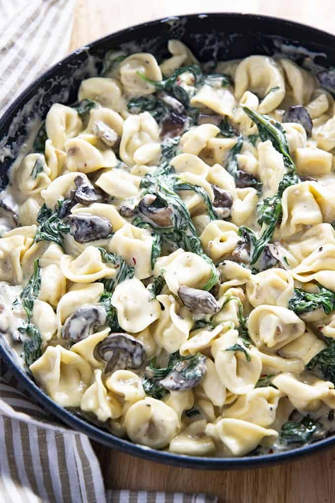

Mushroom Tortellini Alfredo

Description
This pasta dish is a perfect choice for meatless Monday, and with minimal ingredients it's fast to make, too!
Ingredients
- 1 (9 ounce) package refrigerated tortellini
- ½ cup sliced portobello mushrooms
- 2 cloves garlic, minced
- 3 tablespoons butter
- ½ cup evaporated fat-free milk
- ¾ cup freshly grated Parmesan cheese
- 1 pinch ground black pepper
Directions
- Fill a large pot with lightly salted water and bring to a rolling boil; stir in tortellini and return to a boil. Cook uncovered, stirring occasionally, until the tortellini float to the top and the filling is hot, 2 to 3 minutes.
- Melt butter in a skillet over medium-high heat. Add sliced mushrooms and saute until tender, about 5 minutes. Add garlic and cook until fragrant, about 30 seconds. Remove mixture to a small bowl.
- Add evaporated milk to skillet and heat over medium-low heat until warm. Stir in Parmesan cheese until melted. Add cooked tortellini and toss to coat. Garnish with mushroom-garlic mixture.